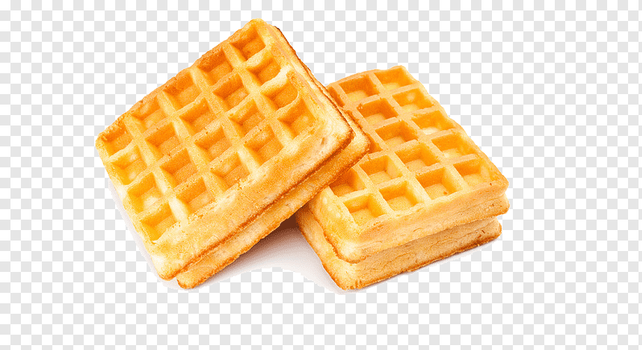

Waffle

Description
Your everyday easy to make waffle
Ingredients
- 1/3 Cup Butter, Melted
- 1 1/2 Cups Warm Milk
- 2 Eggs
- 2 Tablespoons White Sugar
- 4 Teaspoons Baking Powder
- 1 Teaspoon Salt
- 2 Cups All-Purpose Flour
- 1 Teaspoon Vanilla Extract
Steps
- Gather all ingredients
-
Mix dry ingredients (flour, salt, baking powder, sugar) in a large bowl
Preheat waffle iron
-
Beat eggs and mix wet ingredients (milk, butter, vanilla extract) in a bowl
-
Pour flour and milk mixture together and beat until blended
-
Ladle the batter into the waffle iron
-
Cook until golden and crisp